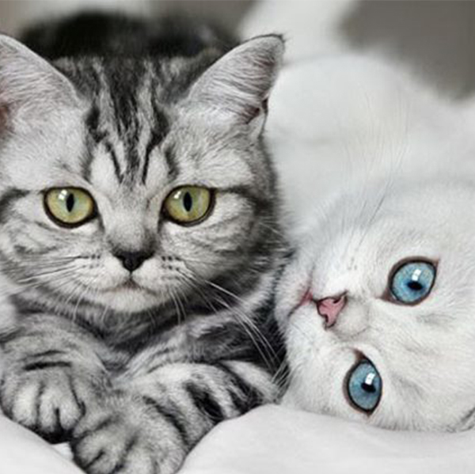
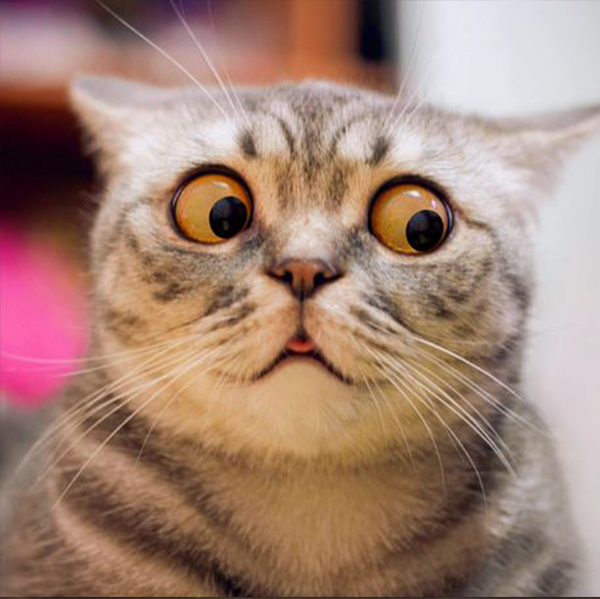

brightness(0);

brightness(1);
brightness(50%);
brightness(200%);
blur(5);

blur(10);
blur(15);
blur(30);
brightness(0);
brightness(1);
brightness(50%);
brightness(200%);
contrast(0%);

contrast(50%);
contrast(100%);
contrast(150%);
drop-shadow
(16px 16px 10px black);

drop-shadow
(10px 10px 5px rgb(66, 9, 136));
drop-shadow
(5px 5px 1px rgb(109, 109, 109));
drop-shadow
(1px 1px 0px black);
grayscale(25%);

grayscale(50%);
grayscale(75%);
grayscale(100%);
hue-rotate(30deg);

hue-rotate(90deg);
hue-rotate(180deg);
hue-rotate(270deg);
invert(25%);

invert(50%);
invert(75%);
filter: invert(140%);
opacity(25%);

opacity(50%);
opacity(75%);
opacity(100);
saturate(0%);

saturate(50%);
saturate(100%);
saturate(200%);
sepia(25%);

sepia(50%);
sepia(75%);
sepia(100%);
opacity(75%)
grayscale(100%);
saturate(200%)
hue-rotate(180deg);
blur(5px)
drop-shadow(16px 16px 10px black);
contrast(175%)
brightness(75%);